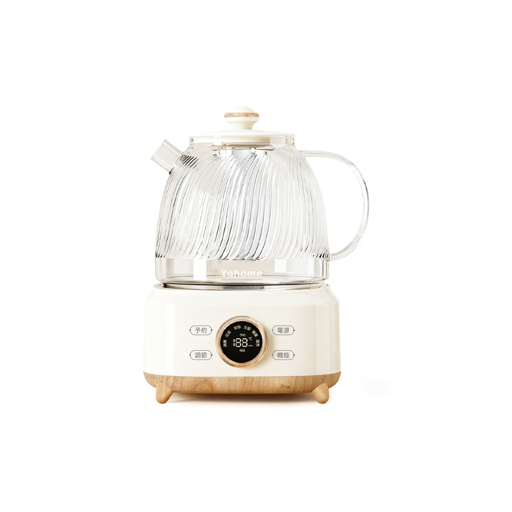

Health Pot / Kettle with Heater · Kitchen / dining area
1 L glass health pot on a heating base — STC temperature sensing, a dedicated 90 °C Tea/Coffee mode, 11 temperature steps, an 18-hour all-day timer and an anti-scalding lid. Borosilicate glass body, 800 W.
| Capacity | 1 L |
| Rated power | 800 W |
| Rated voltage | 220–240 V |
| Body material | Borosilicate glass (single-piece, no coating) |
| Keep-warm | Up to 18 hours |
| Temperature selection | 11 levels |
| Tea/Coffee mode | 90 °C (no boiling) |
| Timer | 18-hour all-day timer |
| Temperature sensing | STC Temperature Sensing System 3.0 |
| Lid | Anti-scalding design |
| Water-level display | Yes |
| Removable filter | Removable |
| Auto power-off | Yes |
| Dry-boil protection | Yes |
| Power indicator | Yes |
| Dimensions (W×H×D) | 230 × 210 × 300 mm |
| Net / packed weight | — / 1.7 kg |
| Origin | China |
| Japanese label | English label | Continuous-boil time | Adjustable boil-time range | Default keep-warm temperature | Keep-warm temperature range | Keep-warm after cycle |
|---|---|---|---|---|---|---|
| 沸騰 | Boil | 30 seconds | — | 45°C | 40–95°C | 8 hours |
| 花茶 | Flower Tea | 5 minutes | 1–10 minutes | 55°C | 40–95°C | 8 hours |
| 茶珈 | Tea / Coffee | 3 minutes; held at 90°C without boiling | 1–5 minutes; held at 90°C without boiling | 55°C | 40–90°C | 8 hours |
| 生姜 | Ginger Tea | 10 minutes | 1–10 minutes | 60°C | 40–95°C | 8 hours |
| 養羹 | Porridge | 90 minutes | 60–120 minutes | 65°C | 60–95°C | 4 hours |
| 膳煮 | Stew | 75 minutes | 30–120 minutes | 65°C | 60–95°C | 8 hours |
| 保温 | Keep Warm | — | — | 55°C | 40–60°C | 8 hours |